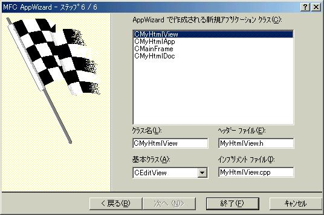
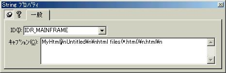
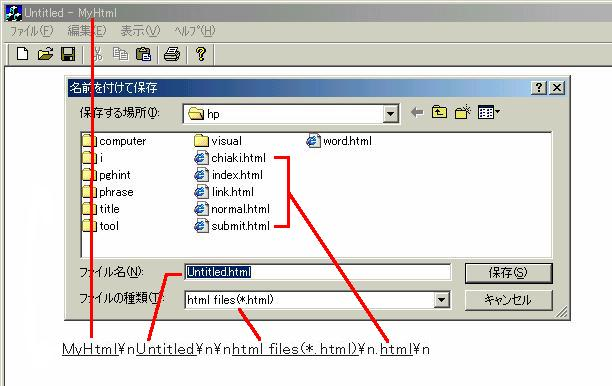
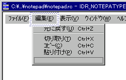
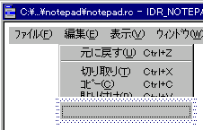

HTMLエディタ〜メモ帳の基盤を作ろう 〜
HTMLエディタですから、まずは編集機能をつける必要があります。そこでメモ帳のような編集機能(コピー、カット、貼り付けなどを)追加します。また本ソフトはHTMLファイルのみ編集することを前提としているために、ファイルのオープンやセーブでhtml形式ファイルのみを扱えるようにします。また、編集機能(コピー、カット、貼り付けなど)は、既存のコードを使用してしまいます。
では先ほどの設計を基にプロジェクトを作成します。
- 1.[ファイル]-[新規作成]
- 2.[プロジェクト]タブをクリックし以下を設定
- MFC AppWizard(exe)をハイライト
- プロジェクト名：MyHtml
- 「ワークスペースを新規に作成する」を選択
- 3.Step1〜作成するアプリケーションの種類〜
- SDI(Single Document Interface)を選択して[次へ]
- 4.Step2〜Step5までは[次へ]
- 5.Step6〜AppWizardで作成されるアプリケーションクラス〜
- CMyHtmlViewをハイライト
- 基本クラスをCViewからCEditViewに変更
- 
これで設計どおりのSDI形式のプロジェクトが作成されました。では実行してみましょう。クライアント領域で文字が入力できればOKです。
ファイルのセーブとオープンの形式をhtmlに限定する操作を行います。といってもこの作業はテキストエディタを作ったときに少し行ったんですけどね(笑)
- 1.[ResourceView]タブをクリック
- 2.MyHtmlリソースのString Tableを開く
- ID、値、キャプションなどの欄のある表が出る
- 3.右クリックでIDR_MAINFRAME(値128)のプロパティを開
- キャプションを以下のように書き換える
- MyHtml\nUntitled\n\nhtml files(*.html)\n.html\n
- 
- 4.実行する
- [開く][名前を付けて保存する]を実行し、htmlファイルを参照していればOK
- ***
- 先ほどの付けた謎のキャプションですが、下の図のように対応しています。
- 
さて、メモ帳のような編集機能を付けるのですが、ここでは編集の処理をCEditView(CEdit)のディフォルト関数に任せてしまいます。任せるといっても、プログラマーはこのディフォルト関数を呼んであげなくてはなりません。以前も説明していると思いますが、WindowsというOSは、ある決められたメッセージをプログラムと送受して処理を行っています。ということは例えば、エディターのコピー機能をつかさどるメッセージをOSに送ればコピーが可能になるわけです。なんだか難しそうですが、ある決められたIDのメニューを実行すればよいんです。これはメモ帳を作成するときにやりましたよね！
1.ワークスペースのリソースのタブをクリック
2.メニューフォルダを選択
3.IDR_MAINFRAMEをダブルクリック
4.開かれたウィンドウの「編集」をクリック(図1)
5.書いていないところをハイライト→右クリック→プロパティ(図2)
(図1)(図2)
7.IDと操作を書込む
-->ここでは「削除」コマンドを作るとして話を進めていきます。プロパティの中に以下の項目を書きます。
- キャプション
- 削除(&D)
- ID
- ID_EDIT_CLEAR
キャプションは、メニューに表示される文字列です。ここでIDのID_EDIT_CLEARはプログラムで指定されているIDで、このIDを書けば「削除して〜」というメッセージが送られることになります。だからユーザはただIDの指定だけ行えばいいのです。
IDを書くと、自動的にプロンプトが書込まれます。(プロンプトはいじらない方がいいと思います。)
-->ここで実行してみます。しっかり削除できますか?できたら次です。今度は検索と置換メニューを入れたいのですが、先ほどのコマンドが直接編集するコマンドだったのに対して、今度は検索と置換だからちょっと編集の雰囲気が違いますね。こういう時にセパレータ(水平線)というものを入れます。
8.何もないところをハイライトしてプロパティを開く
9.セパレータにチェックを入れる
-->そうすると水平線が入りました。たったこれだけです。
詳しくは、ここの３章「メニューコマンドの操作」を参照してください
そして実行してみましょう！HTML形式のみ作業できるメモ帳になっていればOKです！
[Next]
[Previous]
[Home]